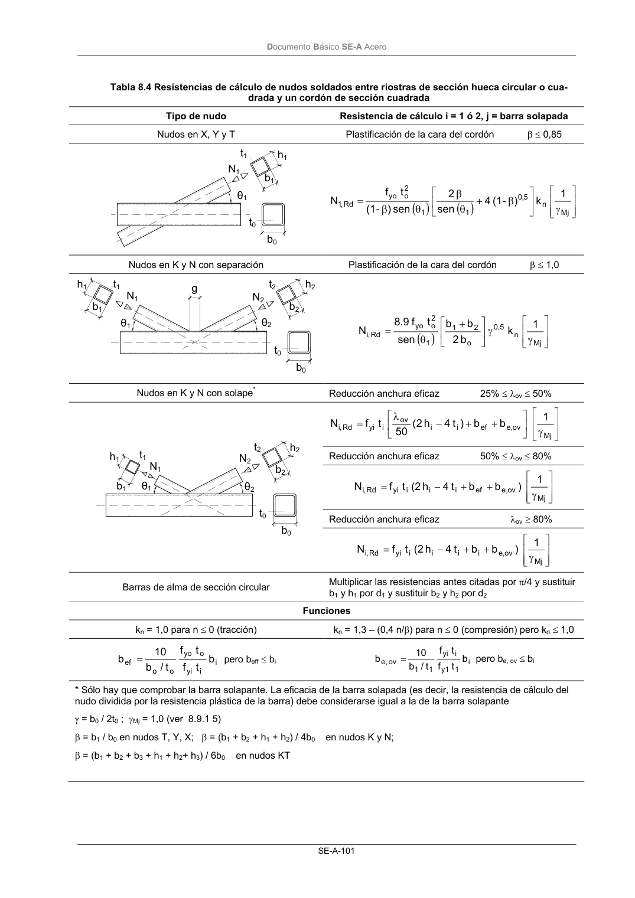

DB-SE-A · Página 103 · versión 2007-10-23
SHA256: 9ed9ea694aabfbda3bfbbef40dfe9223fde05d13c35bc2ba9751e5a96a22a64f · página física 103 de 168 · métodos de encabezado
solo si están cotejados.
Documento · ← p. 102 · p. 104 →
Formatos: Markdown · JSON de bloques · PDF p. 103 · imagen PNG
Documento Básico SE-A Acero SE-A-101 Tabla 8.4 Resistencias de cálculo de nudos soldados entre riostras de sección hueca circular o cua- drada y un cordón de sección cuadrada Tipo de nudo Resistencia de cálculo i = 1 ó 2, j = barra solapada Nudos en X, Y y T Plastificación de la cara del cordón β ≤ 0,85 ( ) ( ) γ β + θ β θ β = Mj n 5 , 0 1 1 2 o yo Rd ,1 1 k ) - (1 4 sen 2 sen ) - (1 t f N Nudos en K y N con separación Plastificación de la cara del cordón β ≤ 1,0 ( ) γ γ + θ = Mj n 0,5 o 2 1 1 2 o yo Rd ,i 1 k b 2 b b sen t f 8.9 N Nudos en K y N con solape* Reducción anchura eficaz 25% ≤ λov ≤ 50% γ + + − λ = Mj ov e, ef i i ov i yi Rd ,i 1 b b ) t 4 h 2 ( 50 t f N Reducción anchura eficaz 50% ≤ λov ≤ 80% γ + + − = Mj ov e, ef i i i yi Rd ,i 1 ) b b t 4 h (2 t f N Reducción anchura eficaz λov ≥ 80% γ + + − = Mj ov e, i i i i yi Rd ,i 1 ) b b t 4 h (2 t f N Barras de alma de sección circular Multiplicar las resistencias antes citadas por π/4 y sustituir b1 y h1 por d1 y sustituir b2 y h2 por d2 Funciones kn = 1,0 para n ≤ 0 (tracción) kn = 1,3 – (0,4 n/β) para n ≤ 0 (compresión) pero kn ≤ 1,0 b t f t f t/ b 10 b i i yi o yo o o ef = pero beff ≤ bi b t f t f t/ b 10 b i 1 y1 i yi 1 1 ov e, = pero be, ov ≤ bi * Sólo hay que comprobar la barra solapante. La eficacia de la barra solapada (es decir, la resistencia de cálculo del nudo dividida por la resistencia plástica de la barra) debe considerarse igual a la de la barra solapante γ = b0 / 2t0 ; γMj = 1,0 (ver 8.9.1 5) β = b1 / b0 en nudos T, Y, X; β = (b1 + b2 + h1 + h2) / 4b0 en nudos K y N; β = (b1 + b2 + b3 + h1 + h2+ h3) / 6b0 en nudos KT t1 h1 b1 b0 t0 N1 θ1 h1 t1 b1 N1 θ1 θ2 g t2 N2 h2 b2 t0 b0 h1 t1 N1 b1 θ1 θ2 N2 t2 h2 b2 t0 b0
